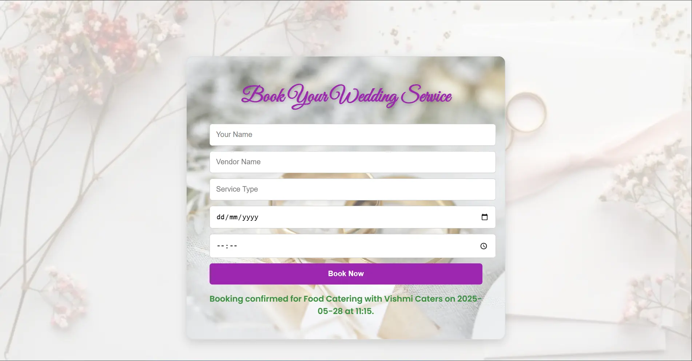
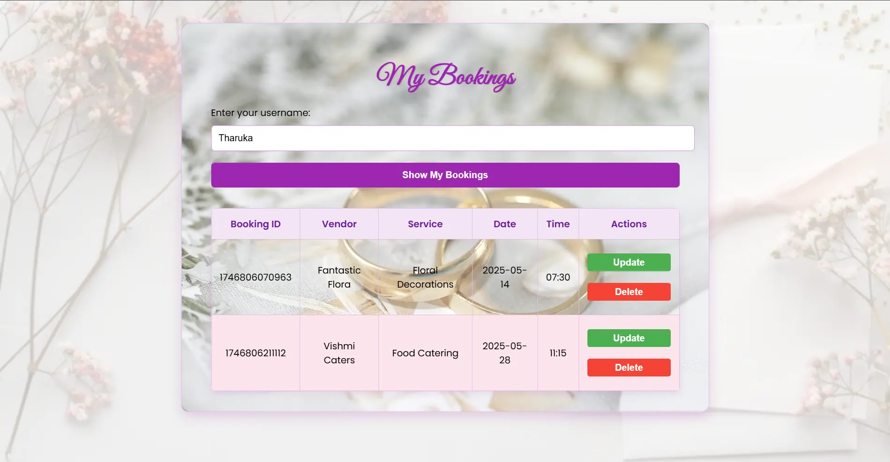
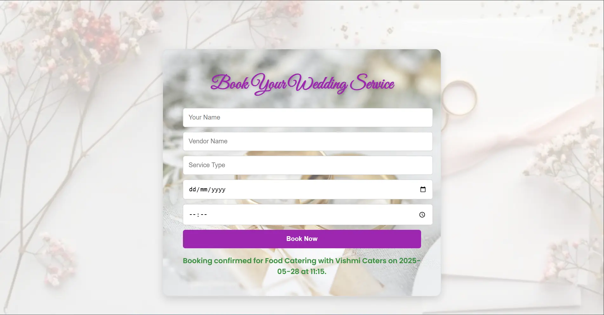
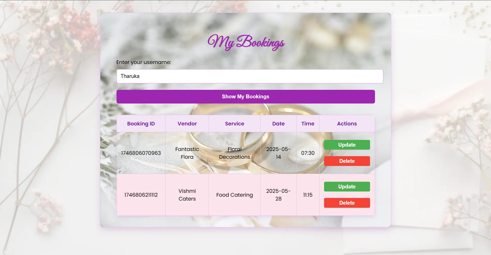

My Projects


A fan-made recreation of the classic Pac-Man game, built using Scratch 3 and enhanced with improved movement, better visuals, and clean logic. This project is developed solely for entertainment purposes, with no commercial intent.
📁 Project Info
- 💻 Platform: Scratch 3.0 (converted to HTML)
- 🛠 Built with: Scratch blocks + TurboWarp Packager
- 📦 Output format: HTML (browser-playable)
📝 Credits & Disclaimer
> This project was entirely developed by GhostDevKA for entertainment purposes only.
> It is not intended for commercial use.
> Some content (characters, sounds, sprites) is not owned by the creator.
> All rights and credits go to their respective owners.
> This is a fan-made project created with respect to the original Pac-Man game.
🚀 How to Run
1. Download the '.html' file using the Download button below.
2. Double-click to open in any modern browser (Chrome, Edge, Firefox, etc).
3. No installation needed. No security warnings.
✅ Works on Windows and most modern systems.
 



This was our first year group project at our university. We built a wedding planner webapp. It includes a User Management System, Vendor Management System, Booking Management System, Billing System and Review System.
🔧 Technologies Used
- Java (Spring Boot)
- HTML/CSS/JS
👨💻 My Contribution
I developed:
- Booking Management System
(handled controller, service, repository, model and frontend pages)
🧑🤝🧑 Team Credits
- Kasun Akalanka
- Tharuka Kumarasiri
- Ilma Fariz
- Shenali Fernando
- Vishmi Dissanayeke
⚙️ How to Run
1. Clone the repo
2. Run `BackendApplication.java` in your IDE